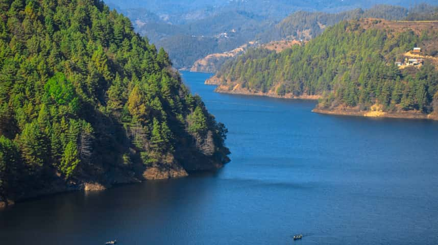
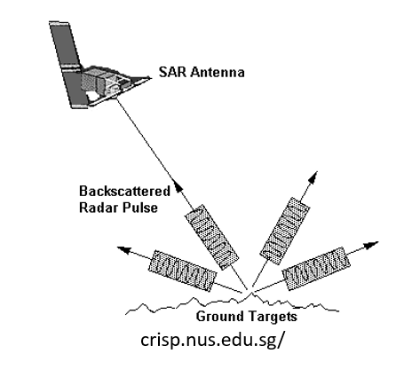
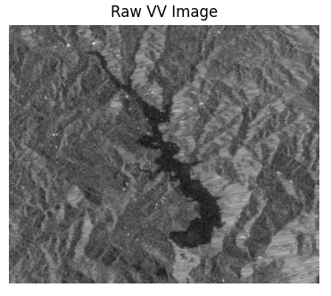
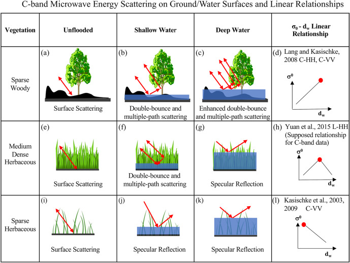
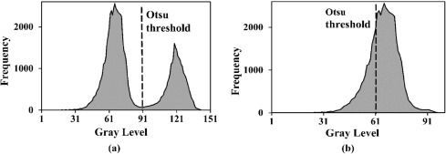
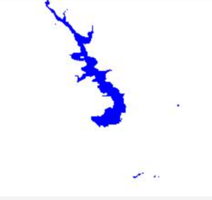
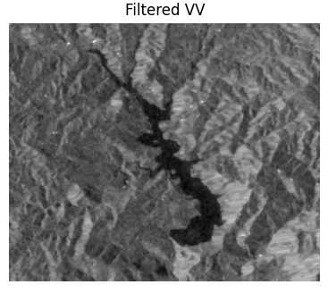
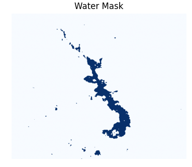
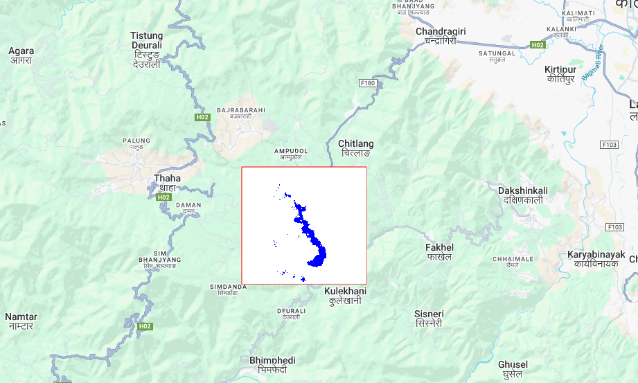

Surface water bodies play vital role in supporting the ecosystem services in various countries around the world, mainly related to domestic, industrial, and agricultural uses, such as food, electricity (hydropower), medicinal substances and other materials production from biota, and the creation of recreation zones. Monitoring surface water is essential for both ecological and hydrological studies. The Kulekhani Reservoir in Nepal, the country's only operational storage-based hydropower facility, holds significant importance in this context. However, conventional monitoring methods that rely on costly sensors and ground-based systems present substantial economic challenges for developing nations like Nepal. It is one and only operational storage-based hydropower present in Nepal. In this study, we present a cost-effective approach for surface water mapping and time series analysis using Synthetic Aperture Radar (SAR) satellite imagery. The generated time series provides continuous records of water extent over time, enabling the detection of seasonal and interannual variations in the reservoir. Such temporal insights are invaluable for optimizing hydropower operations, assessing drought or flood impacts, forecasting water availability, and supporting long-term water resource planning. This approach demonstrates how remote sensing can enhance sustainable reservoir management by providing reliable, repeatable, and data-driven insights for decision-makers. of the Kulekhani Reservoir, Nepal using Sentinel-1 SAR imagery.

Synthetic Aperture Radar (SAR) is an active remote sensing system that transmits microwave signals toward the Earth's surface and records the energy that returns back to the sensor. A major limitation of satelite imagery is the presence of clouds. In a region like Nepal, where there is cloudy during monsoon season, it is very difficult to create a visible time series of any surface water. Sentinel-1 and other SAR sensors employ radar waves, which can pass through clouds and provide us a picture of the earth's surface. SAR operates by directing a radar signal at an off-nadir angle that is, not straight down, but at an angle, from the satellite toward the ground. The satellite monitors the amount of backscatter that returns to it after the signal strikes the ground and scatters. The roughness of the surface affects how much backscatter there is; smoother surfaces scatter less. In contrast to very high scattering land surfaces, large, flat surfaces like water scatter very little and show out as black blotches. Because SAR uses microwaves instead of visible light, it can penetrate clouds and operate day or night, making it ideal for monitoring water bodies in cloudy, mountainous regions like Nepal.

Here we load the Sentinel-1 collection and filter for images of our region taken after 2017. We also filter for type of signal recieved. “VV” stands for vertical transmit, vertical recieved. This means that both the signal transnmited from and recieved by from the satellite is vertically polarized. Some surfaces alter the polarization of the radar signal, but for water body detection, this is usually unused. We only care that all of our images have the same kind of transmit/recieve polarizations. The below is the GEE code for downloading the Sentinel-1 image.
// Sentinel-1 data collection and filtering
var s1 = ee.ImageCollection('COPERNICUS/S1_GRD')
.filterBounds(geometry)
.filterDate('2019-10-01', '2019-10-31')
.filter(ee.Filter.eq('instrumentMode', 'IW'))
.filter(ee.Filter.eq('orbitProperties_pass', 'ASCENDING'))
.filter(ee.Filter.listContains('transmitterReceiverPolarisation', 'VV'))
.select('VV');
Map.addLayer(s1.mean().clip(geometry), {min:-25, max:0}, 'Mean VV');
The given below image is an example of the raw image sentinnel image which has been downloaded from the above script.
Surface water bodies play a vital role in supporting ecosystem services, including hydropower and agriculture. Monitoring is essential, but conventional ground-based methods are costly. The Kulekhani Reservoir is Nepal's only operational storage-based hydropower facility. This project utilizes Sentinel-1 Synthetic Aperture Radar (SAR) to overcome cloud cover and provide continuous monitoring.

The strength of the returned signal, known as backscatter, varies depending on the surface roughness and moisture content. Calm water surfaces appear dark in SAR images because they reflect the microwaves away from the sensor, producing very low backscatter values. In contrast, rough terrain, vegetation, and built-up areas reflect more energy, appearing bright.

This physical contrast between low-backscatter water and high-backscatter land enables accurate extraction of water bodies from SAR imagery. By applying thresholding techniques such as Otsu segmentation on Sentinel-1 VV polarization, this project generates reliable surface water masks that remain consistent across seasons—regardless of cloud cover.

Sentinel-1 GRD (IW, VV, Ascending) images are filtered for the Kulekhani reservoir area. SAR allows for data collection during monsoon seasons when optical satellites are blocked by clouds.
Similarly, from the same platform use download the JRC dataset that contains monthly data of surface water area.

Both of the images are sourced from Google Earth Engine.
We apply a Lee Sigma Speckle Filter to reduce noise while preserving edges, using the hydrafloods module in GEE.

An Edge Otsu thresholding algorithm automatically separates water from non-water pixels based on backscatter intensity. We are only required to apply Edge Otsu algorithm to create a binary mask for SAR Images, whereas for the JRC datasets, we wont require them as they are already a binary image. For easing the edgeOtsu process, we use EdgeOtsu library from hydrafloods.

The later process is carried out on python. Binary mask derived from SAR images have resolution of 10m/pixels whereas, those ones obtained from the JRC dataset have resolution of 30m/px.
// Sentinel-1 Filtering
// Import HydraFloods module
var hydrafloods = require('users/kelmarkert/hydrafloods:main.js');
// Define Region of Interest: Kulekhani Reservoir
var geometry = ee.Geometry.Polygon(
[[[85.12266294746495, 27.6337444538432],
[85.12266294746495, 27.582633628899824],
[85.18411772041416, 27.582633628899824],
[85.18411772041416, 27.6337444538432]]],
null, false
);
Map.centerObject(geometry, 12);
Map.addLayer(geometry, {color:'red'}, 'Kulekhani AOI');
// Sentinel-1 data collection
var s1 = ee.ImageCollection('COPERNICUS/S1_GRD')
.filterBounds(geometry)
.filterDate('2015-01-01', '2015-12-31')
.filter(ee.Filter.eq('instrumentMode', 'IW'))
.filter(ee.Filter.eq('orbitProperties_pass', 'ASCENDING'))
.filter(ee.Filter.listContains('transmitterReceiverPolarisation', 'VV'))
.select('VV');
var count = s1.size().getInfo();
print('Processing ' + count + ' images...');
var s1List = s1.toList(count);
// Loop through images individually
for (var i = 0; i < count; i++) {
// A. Get the single raw image
var rawImg = ee.Image(s1List.get(i));
// B. Apply Speckle Filter (LeeSigma works on single images)
var smoothed = hydrafloods.filtering.leeSigma(rawImg);
// C. CRITICAL FIX: Wrap the image in a Collection
// The edgeOtsu function demands a Collection, so we give it a collection of 1.
var singleImageCollection = ee.ImageCollection([smoothed]);
// D. Run Edge Otsu
var edgeWater = hydrafloods.thresholding.edgeOtsu(
singleImageCollection,
{
initialThreshold: -20,
smoothEdges: 300,
verbose: false
}
);
// E. Create Filename
var imgId = rawImg.id().getInfo();
var fileName = 'Kulekhani_Binary_' + imgId;
// F. Export
// Note: edgeOtsu usually returns an Image when run this way.
Export.image.toDrive({
image: edgeWater.clip(geometry),
description: fileName,
folder: 'GEE_Kulekhani_2014_2017',
scale: 10,
region: geometry,
crs: 'EPSG:4326',
maxPixels: 1e13
});
}
);The Visualization after running the above code looks like below.

Binary water mask (Blue) overlaid on OpenStreetMap. Zoom in to see the Kulekhani reservoir boundaries.
Comparison of water surface area derived from Sentinel-1 (Blue) vs. In-situ measurements (Orange).
The comparison between surface water area obtained from Sentinel-1 SAR, JRC Global Surface Water, and in-situ reservoir measurements provides important insights for understanding water dynamics of Kulekhani Reservoir. This analysis demonstrates the strengths and weaknesses of radar-based and optical-based measurements compared to ground-based measurements for hydrological monitoring.
Conclusion: SAR is highly effective for continuous monitoring of water surface variations.
Conclusion: JRC is less reliable for month-to-month monitoring in mountainous, cloud-prone areas.
Conclusion: Radar-based mapping is far more robust for regions like Nepal that experience extended cloud cover. Despite minor underestimation, SAR preserves the correct trend, which matters most for hydrological assessment.
The strong correlation between SAR and in-situ observations demonstrates the robustness of Sentinel-1 for reservoir monitoring under Nepal's monsoon-dominated climate. JRC's weaker agreement highlights its limitations in cloud-prone, rugged terrain.
This analysis carries significant value for reservoir managers, hydropower authorities, disaster risk planners, and water resource officials:
Conclusion: Remote sensing for hydrology empowers decision makers with timely, accurate, and continuous information. Combining SAR with in-situ measurements forms a powerful monitoring system that enhances Nepal's capacity for water resource management and disaster resilience.
You can access the codes and tutorials form the GitHub repository.